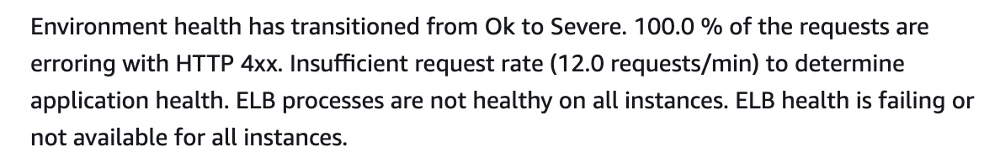
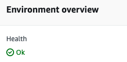

Elastic Beanstalk Healthcheck with a Django App
The Problem
Elastic Beanstalk (EB) is an orchestration service offered by AWS for deploying web applications. The good thing about EB is that it handles much of the setup for you. The bad thing is that EB also includes services, such as Healthchecks, that do not work for a Django app without additional setup.

Although my app was deployed and appeared to be working correctly, the Elastic Beanstalk environment reported Severe/Degraded state. The health monitoring was reporting that 100% of the requests to the load balancer were 4xx requests:
"GET /healthcheck/ HTTP/1.1" 400 154 "-" "ELB-HealthChecker/2.0" "-"
For my environment, the issue was caused because the ELB-HealthChecker was pinging the local IP address of the EC2 server hosting my app. This is an issue for two reasons. First, Django requires the IP address to be added to ALLOWED_HOSTS. Second, the troublesome IP address is dynamically assigned (meaning you can’t just manually add it in settings.py). In this post I will go over my experience, and how I managed to resolve this issue.
For the record, despite the health check constantly failing, the application was indeed working and running fine.
Finding a Solution
As with many errors of this type, I took to the Internet conducting searches on Django, Elastic Beanstalk, and HealthCheck. StackOverflow provided several useful snippets but this post looked promising. Unfortunately, that post was from 2019 and the solution did not work because AWS had updated their EC2 metadata service to require a token.
This Is The Way
After reading more about using tokens to obtain the needed IP address, I was able to produce this code for the settings.py file.
# settings.py
...
try:
IMDSv2_TOKEN = requests.put('http://169.254.169.254/latest/api/token', headers={
'X-aws-ec2-metadata-token-ttl-seconds': '3600'
}).text
EC2_PRIVATE_IP = requests.get('http://169.254.169.254/latest/meta-data/local-ipv4', timeout=0.01, headers={
'X-aws-ec2-metadata-token': IMDSv2_TOKEN
}).text
# print('EC2_PRIVATE_IP', EC2_PRIVATE_IP)
except requests.exceptions.RequestException:
EC2_PRIVATE_IP = None
ALLOWED_HOSTS = ['YourDomain.com']
if EC2_PRIVATE_IP:
ALLOWED_HOSTS.append(EC2_PRIVATE_IP)
...
This changed the health check responses from 400 to 200!
"GET /healthcheck/ HTTP/1.1" 200 186 "-" "ELB-HealthChecker/2.0" "-"
Seeing the green “Ok” checkmark in the EB dashboard is a good feeling and makes it much easier to go home in the evening.

As a final note, I also changed the health check path from the root path “/” to a dedicated path of “/healthcheck/”. Using the root path would likely work but then you may have to deal with redirects and handling 3xx response codes. I find a dedicated path & logic to be a better fit for my needs.